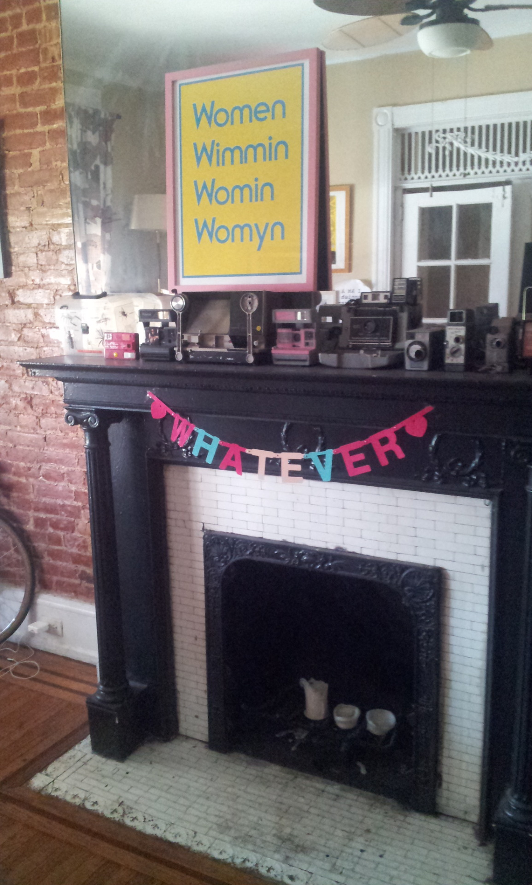
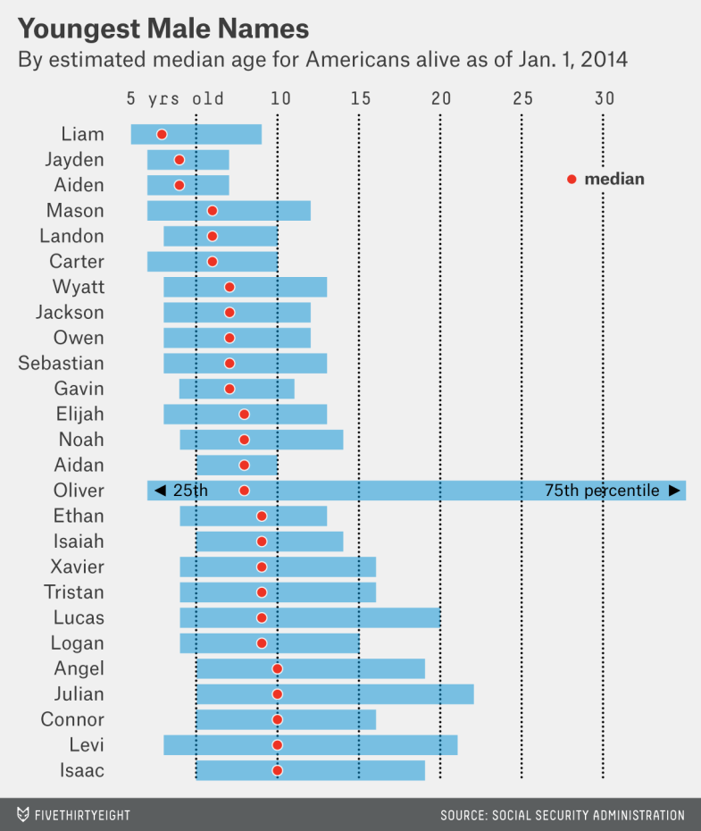

ABREPTION
dearhussy:
dear tumblr i come to you for advice (a specious proposition for sure):
what do you do when you just want to sew quilts like a grandma and yr boyfriend has like 30 porn tabs open and is on an extended edging j/o quest?
“hey babe after you finish that Hussy post will you come over and suck my dick?’
ABREPTION
dear tumblr i come to you for advice (a specious proposition for sure):
what do you do when you just want to sew quilts like a grandma and yr boyfriend has like 30 porn tabs open and is on an extended edging j/o quest?
DISCUBITURE
♪♪IT’S THE MOST CRUISIEST TIME OF THE YEAR (IT’S TRANS MAAARCH!) ♪♪
but this year the Hussy is all wifed up so it’s like just cuz yr on a diet doesn’t mean you can’t look at the menu right?
but how to do that w/o coming off as that creepy poly couple who wants to ensnare you in our sticky psychosexual web (tho #actuallytobrag many thots would sign up for this i’m sure but eeeh not interested)
how does a slut slut without slutting too sluttily
it is a conundrum
BEAUTÉ DU DIABLE
the Hussy befriended some rando masc on Facebook from the group HOTTEST FTMS & THEIR ADMIRERS cuz she was feelin his pics
anyway he just posted with pride & accomplishment his new legal driver’s license
Height: 5’0”
Weight: 100lbs
DAMMIT

lgbtqblogs:
Portland’s First Official Trans Pride March
welp

this social media-driven talent farm has seriously misjudged the Hussy’s oeuvre
OkCupid user /transkayla- Read a bitch?
The Hussy generally considers this kind of thing beneath her, but
I wish I liked heteronormative bi girls with terrible taste in boys and regressive attitudes about sex and relationships who are eager to lose themselves in another person as part of some weird codependent psychological script, because this city is fucking overflowing with them.
Not interested in people who have a man as a primary partner or who regularly date men (if you think trans men don’t count as men, then you’re a transmisogynist shitbag and I want nothing to do with you). I find romantic attraction to men to be rather icky and I find testosterone to be sexually repulsive.
…it seems that OKCupid user /transkayla has already preemptively read The Hussy pretty well herself.

whateverjeanne: a digital affect, a discursive temporality, a post-futurity, a soft materiality, a rhizomatic estrogenesis, a lifestyle
HUSSY @ #PTHC vi : The Final Part
one might consider the occasion to donate to this kickstarter, for all God’s children could use a chance to brush up on their PBS level reading skillz
HUSSY @ #PTHC v : The Inevitability of the OP Party, or, Further Thoughts on Thots
the mascs at this thing are easy pickings because:
a) they are from the hinterlands & are surprisingly perplexed that everyone wants to sleep with them,
b) they are on furlough from the weird poly gfs they left at home who won’t sleep with them anyway,
c) this con is full perennially of (tryin to find the words to describe these girls without being disrespectful) (well ok i give up) thirsty sluts who come in no small part due to the seasonal monsoon of cock that descends on the city of brotherly love, and
d) a confluence of all the above
HUSSY @ #PTHC iv : Thoughts On Thots
aggressively ignoring you as a form of self care
HUSSY @ #PTHC iii :
perhaps you could be my rosetta stone & decipher these mysterious hieroglyphics
HUSSY @ #PTHC ii : #BUFFBUTCH
lot lizarding this workshop has rendered at least a month’s worth of solid masturbation material
10,000 LEAGUES UNDER THE T: Or, The Hussy Investigates The Philly Trans Health Conference
the Hussy has been at this thing for five minutes and has already had a GASP! YOU! OH YOU HEINOUS BITCH! moment
cat-hiss-mreeeow.gif
THE HUSSY INVESTIGATES: Queer Punk Pride, Vol. III
many crusty trans womyn hitting me up with guilt tactix for various v serious political projects
why can’t everyone embrace Laverne-esque Miss America affects
it’s like they’re all #JustKeepItBaedel-atin’ #WhyYrWaiting #InThisDancerie
THE HUSSY INVESTIGATES: Queer Punk Pride, Vol. II
already trapped in a 15 minute livejounal nostalgia convo
THE HUSSY INVESTIGATES: Queer Punk Pride, Vol. I
“Are you tired of being persecuted for being ANGRY???”
idk tbh persecution is not so bad & i am on toooo many drugs to be angry
it seems that my man has been using my iPad and also spending too much time on ftm bodybuilding forums
*linda from bob’s burgers voice* so butch! so masc! so competent! feats of strength!
The Overly Attached Girlfriend — in her more baldly expressed ambivalence, her blank affect, her death-grip on perceived promises — represents the struggling decline, hopefully terminal, of the straight couple as normative destiny. Monogamy is over, long-term job contracts are over, retirement is over, mortgages are over, cinema is over (kind of), novels are over (pretty much), content is compressed into a single fleeting moment: the meme. Everything you need to understand you need to understand immediately… Even (or perhaps most of all) in the gated community of middle-class white womanhood, women not only can’t have what they want, they are barred from frank expressions of wanting… Now, at least in most mainstream discourse, feels-shaming is more common than slut-shaming: the shame of being too much or too little, too warm or too cold, too ambivalent or too certain.
…
In her breakthrough video, she sings a parody of Justin Bieber’s “If I Was Your Boyfriend.” “If I was your girlfriend/I’d follow you everywhere.” The lyrics, only slightly contorted from the original, and, significantly, re-gendered, take the surreal intensity of Bieber’s offer and turn it into violence, the kind of muted, self-hating violence that Girlfriends are capable of. Laina’s video doesn’t really respond to Bieber’s song, because the two intensities could never meet in the middle. The convergence between the central text of Laina’s video and the subtext of Bieber’s career is that the hysterical love he inspires in his fans over-literalizes his sexual promise and so renders it asexual, perfect for a teen dream. Although some of Laina’s videos reference sex, her desire isn’t oriented towards sex, or even particularly towards a boyfriend; both are just means to maximal intensity of feeling.
…
The Tragic Heroine can get a lot out of a little. What she can’t do is find a balance between her inability to take a disgusting world seriously and her longing for connection. At first glance she seems anachronistic, a love traditionalist, but on reflection it is impossible to assign her to any particular era. Perhaps she is an anachronism from a time that has yet to come. In any case, the Tragic Heroine is usually a woman, not in the biological sense but in the sense that she perceives the world as happening inside her rather than extrinsically.
…
Her love has no real narrative structure, although it’s very dramatic: She loves immediately, deeply, and forever, and if you want anything else in the way of plot you have to look elsewhere. Nothing develops or unfolds, she reaches maximal intensity and then stays there until she dies. Possibly the worst thing anyone could do to her is fully return her love. Then she would be stuck at home forever (like the tormented heroine of another Fassbinder film, Martha); then she could no longer be too much, violently rendered just enough.
…
Men could have loved women more, back when we still had full institutional heterosexuality, but they didn’t, because women are providers of services, not agents. They are luxury goods or bargains. In return women can do one of the following: attempt to be loved as such (provide incomparably excellent services); demand to be loved anyway (“see beyond my servitude!”), or forget about the whole thing. None of these choices is without some kind of pain. There must be another position, but we won’t find it on YouTube.
…
(this whole thing is really worth reading in its entirety.)

HIGHLY SIGNIFICANT
mordicaifeed:
rincewitch:
it’s your father’s friendlock. this is the weapon of a livejournalist. not as clumsy or as random as a personal tumblr, but a more elegant weapon for a more civilized age. for years, the livejournalists were the guardians of idiotic blog drama and fandom pornography in the galaxy. before the dark times, before tumblr
If you only knew the power of the livejournal!
everyone who tasted its sweetness misses the power of highly secure longform lifecasting
dearhussy:
dearhussy:
monsieur sehksmith somehow #targeted the Hussy with fb ads for this d/s MOOCification situation
“I’ve been a sub for a long time, and I’ve dated lots of D-types, but I still want … more. More … something.”
the Hussy is well acquainted with this charactyr and i tell you what, has never met someone whose public persona is more divorced from thyr private self, which je used to describe as “a quivering jello mold of lesbian anxiety”
more *something* indeed
"This package includes: Progress tracking on the Star Chart”
submission dot app
yr gamification is #basic and yr GUI look like shrek
honestly at the end of the day tho \/\/ nbd tho a butch has gotta make ¢oin like everybody else
dearhussy:
monsieur sehksmith somehow #targeted the Hussy with fb ads for this d/s MOOCification situation
“I’ve been a sub for a long time, and I’ve dated lots of D-types, but I still want … more. More … something.”
the Hussy is well acquainted with this charactyr and i tell you what, has never met someone whose public persona is more divorced from thyr private self, which je used to describe as “a quivering jello mold of lesbian anxiety”
more *something* indeed
"This package includes: Progress tracking on the Star Chart”
submission dot app
yr gamification is #basic and yr GUI look like shrek
monsieur sehksmith somehow #targeted the Hussy with fb ads for this d/s MOOCification situation
“I’ve been a sub for a long time, and I’ve dated lots of D-types, but I still want … more. More … something.”
the Hussy is well acquainted with this charactyr and i tell you what, has never met someone whose public persona is more divorced from thyr private self, which je used to describe as "a quivering jello mold of lesbian anxiety”
more *something* indeed